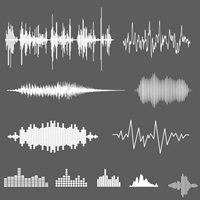

As notas musicais são os sons que compõem a base da música. Elas representam as diferentes alturas dos sons (graves e agudos) e são usadas para criar melodias, harmonias e ritmos. Cada nota tem uma frequência específica que determina sua altura, ou seja, quão grave ou agudo é o som.
O sistema musical ocidental é baseado em sete notas principais, que são:
Dó (C)
Ré (D)
Mi (E)
Fá (F)
Sol (G)
Lá (A)
Si (B)
Essas notas seguem uma sequência que se repete em oitavas. Uma oitava é o intervalo entre uma nota e outra de mesma altura, mas com o dobro ou metade da frequência sonora.
Notas Sustenidas (#) e Bemóis (♭): Entre as notas naturais existem meios-tons, que são representados por:
Sustenidos (#): Eleva a nota em meio-tom (ex.: Dó# é meio-tom acima de Dó). Bemóis (♭): Abaixa a nota em meio-tom (ex.: Ré♭ é meio-tom abaixo de Ré). As notas alteradas por sustenidos e bemóis são chamadas de acidentais.
Cada nota possui uma frequência específica medida em hertz (Hz). Por exemplo:
O Lá central (A4) tem uma frequência padrão de 440 Hz. Se subirmos uma oitava, o Lá (A5) terá 880 Hz.
Melodia: Criada pela sequência de notas tocadas ou cantadas uma após a outra. Harmonia: Surge quando várias notas são tocadas ao mesmo tempo (como em acordes). Ritmo: As notas são organizadas no tempo, formando padrões rítmicos.
As notas são escritas em uma partitura musical usando figuras de notas (bolinhas preenchidas ou vazias com hastes) e colocadas em linhas e espaços do pentagrama (as cinco linhas horizontais da partitura).
O pulso é como o "coração" da música, que mantém uma batida constante. É o que faz você querer bater o pé ou dançar no ritmo da música.
O tempo define a velocidade do pulso e é medido em BPM (batidas por minuto). Tempo lento: Menos BPM, como em músicas clássicas ou baladas. Tempo rápido: Mais BPM, como em músicas eletrônicas ou de dança.
O compasso organiza os ritmos em grupos de batidas, criando padrões regulares. Exemplo: Compasso 4/4 (muito comum na música pop e rock) tem 4 batidas por compasso.
Cada nota ou pausa tem uma duração específica: Semibreve: 4 tempos. Mínima: 2 tempos. Semínima: 1 tempo. Colcheia: 1/2 tempo. Semicolcheia: 1/4 tempo.
Ritmos incluem batidas fortes (acentuadas) e fracas, que criam o padrão característico de cada estilo musical.
Ritmo Binário (2/4): Muito usado em marchas, como em hinos militares ou músicas de carnaval. Exemplo: "Dois pra lá, dois pra cá".
Ritmo Ternário (3/4): Comum em valsas e músicas clássicas. Exemplo: "Um, dois, três".
Ritmo Quaternário (4/4): O mais comum na música ocidental, usado em rock, pop, jazz e muitos outros estilos. Exemplo: "We Will Rock You" do Queen.
Ritmos Irregulares:
Usados em gêneros mais experimentais, como música progressiva ou folclórica. Exemplo: Compasso 7/8 em algumas músicas de rock progressivo.
Cada gênero musical tem ritmos característicos: Samba: Baseado em ritmos sincopados, com forte influência africana. Rock: Ritmos marcados no compasso quaternário, com destaque para a bateria. Reggae: Ritmo relaxado, com ênfase nas batidas 2 e 4. Jazz: Ritmos complexos e improvisados, muitas vezes sincopados. Música Clássica: Ritmos variados que acompanham as mudanças dinâmicas e emocionais.
Síncope: Quando o som ocorre onde normalmente haveria silêncio, criando um efeito "surpresa". Exemplo: A batida do samba. Contratempo: Quando a batida ocorre fora do tempo forte, deslocando o ritmo.
África: Ritmos complexos e polirrítmicos, como no djembe. Brasil: Samba, bossa nova, baião, forró e muitos outros. Cuba: Rumba, salsa e son cubano. Índia: Tala (sistema rítmico usado na música clássica indiana).
O ritmo conecta a música ao corpo, permitindo que seja sentida fisicamente. Ele é essencial para: Criar emoção e movimento na música. Marcar o estilo ou gênero. Facilitar a interação entre músicos e dançarinos.